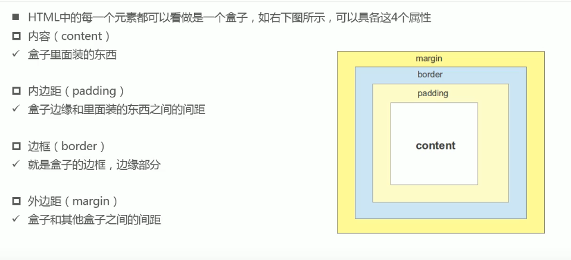
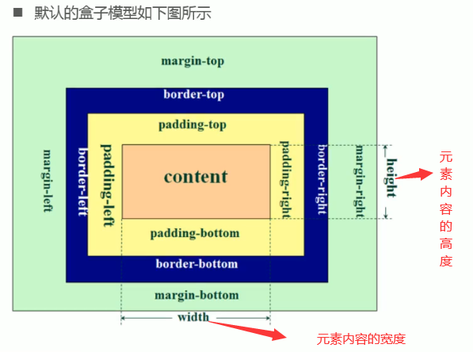
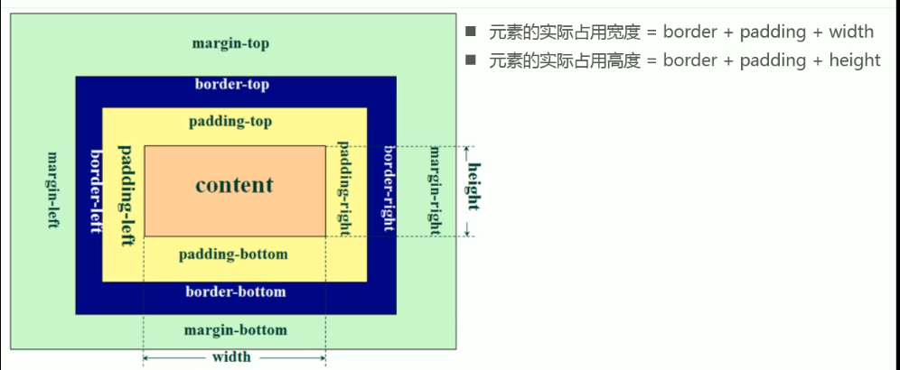
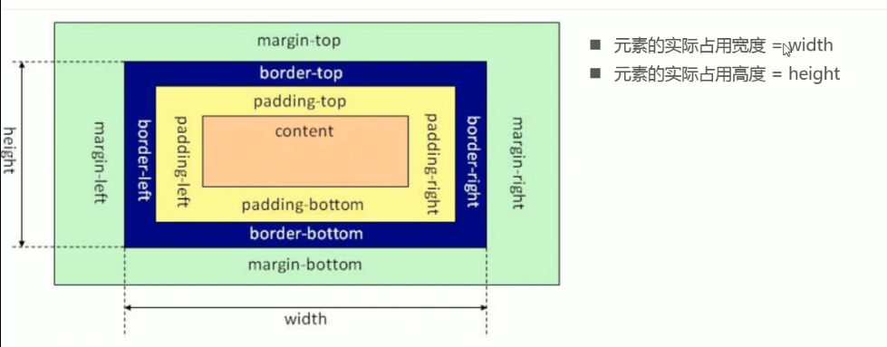
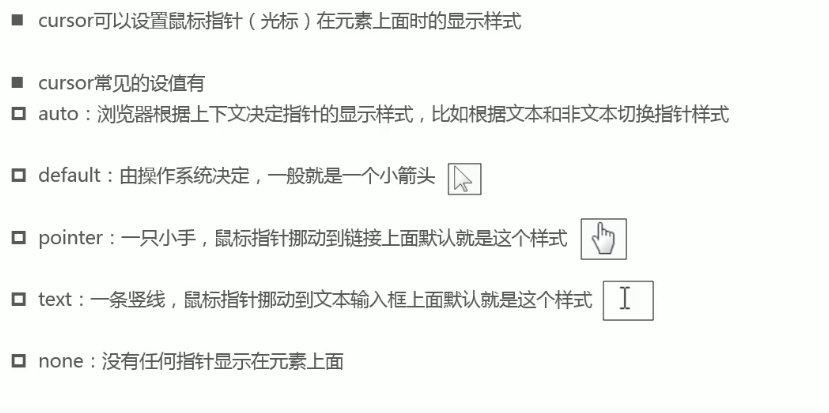

css盒子模型(box model )是指css在处理HTML网页时，会认为每一个html元素都是包含在一个肉眼不可见的盒子(一个矩形)里的，这样有利于网页的布局。
这个盒子模型由四部分组成：
内容区(content)，就是html的元素内容
内边距(padding)，元素内容到边框的距离
边框(border)，盒子的边距，它围成了一个盒子
外边框(margin)，每个盒子之间的距离


对于这三个属性它们都有四个值分别是按照 上(top)，右(right)，下(bottom)，左(left)的顺时针顺序来设置的。
即padding/border/margin-top,padding/border/margin-right,padding/border/margin-bottom,padding/border/margin-left
也可以缩写：padding/border/margin:值; 值的取法如下：
四个值时：上 右 下 左
三个值时：上 左右 下
两个值时：上下 左右
一个值时：上右下左一样
注意：对于行内非替换元素：设置宽高无效，设置 margin-top 和 margin-bottom 属性也无效。
但是水平方向的border和padding都可以设置且会改变页面上可见框的大小占据布局空间，垂直方向也能设置但是不占据空间。
在设置了内容区的宽高之后，设置元素的内边距会影响元素在页面的可见框大小。 因为w3c默认是content-box。
为元素设置边框必须指定三个样式：border-width：边框的宽度，border-color：边框的颜色，border-style：边框类型。 这三个都是 border-top/right/bottom/left-width/color/style 的缩写。但是三个样式又可以缩写成：border。 border:1px solid black ;一般都这样写，而且里面的书写顺序没有要求。 css3新增的圆角属性:border-radius也是四个方向上的缩写。 border-top/bottom-left/right-radius:10px 20px;第一个是水平方向的圆半径，第二个是垂直方向上的圆半径(不设置时跟第一个一样。) 使用缩写属性：border-radius:10px;设置一个值就行。
每个盒子(即元素)之间的距离，设置值不会影响在页面上的可见框大小，但是会影响元素在页面上排放的位置。
设置负值时往反方向移动。
在设置垂直外边距时，会有垂直外边距重叠的问题：
1. 在网页的垂直方向上，相邻的元素之间(兄弟元素)同时设置 margin-top 和 margin-bottom 属性，这是浏览器会取最大值，而不是和。解决方法设置一个元素的值就好
2. 如果是父子元素垂直外边距相邻了，子元素设置的margin-top值会传递给父元素。
解决方法：1.给父元素设置padding-top/padding-bottom，2.设置父元素的边框，
3.触发BFC(block format content 块级格式化上下文)相当以一个结界：
触发方法：浮动可以触发，设置元素的overflow属性为非visible也可以触发。
outline属性表示元素的外轮廓(border的外面一点，属性跟border类似。)，有点像边框的边框但是它不占用空间而border是占据空间的会改变页面上元素的显示大小。 在调试时添加一个样式：div{outline:2px solid red !inportant;}可以快速知道别人的div布局。 也用它来取消a元素input元素的focus轮廓效果。
这个属性用来设置盒子的阴影(即盒子的影子)：无顺序要求，可以设置多个使用逗号隔开。 第一个值水平方向的偏移，正数往右偏移。 第二个值垂直方向的偏移，正数往下偏移。 第三个值阴影的模糊半径 第四个值阴影的延伸半径 第五个值 阴影的颜色，不写跟随color属性的值
这个属性用来设置盒子宽高的具体行为，w3c标准是content-box。
取值：
box-sizing:content-box;默认值,内容盒子即设置宽高时是设置内容区(content)的大小，元素在页面上显示会被border和padding影响。

box-sizing:border-box;这样设置宽高时就是内容区+内边距+边框。

这个属性可以设置鼠标光标在HTML元素上时的显示样式，
值：
auto 浏览器根据上下文决定显示什么。
default ;有操作系统决定一般都是小箭头。
pointer;一只小手，鼠标放在超链接上默认都是这个。
text; 一条竖线，鼠标放在文本上时默认的样式。

这个属性可以设置元素在页面上显示的透明度，值0~1之间。0表示完全透明，1完全不透明，0.5半透明。ie8及以下不支持。
面试题：盒子水平垂直都居中的解决方法？ 定位 display：flex; js,获取屏幕的宽高clientwidth，获取元素的offsetwidth，设置元素的偏移量 = (clientwidth-offsetwidth)/2